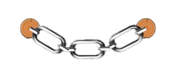
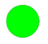
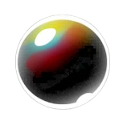
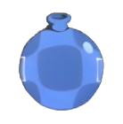
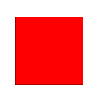
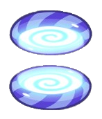

Anfängerleitfaden
Du willst dein Wissen in Cut The Chain auffrischen oder bist völlig neu hier? Dann ist das hier deine erste Anlaufstelle.
Diese Seite erklärt dir alles, was du über Cut The Chain wissen musst, um schnell mit dem Spielen anzufangen.
Es empfiehlt sich, diese Seite vor deinem ersten Mal Cut The Chain durchzulesen.
Was ist das Spielprinzip?
In Cut The Chain ist dein Ziel einfach:
Schneide Ketten durch, überwinde Hindernisse und bringe den grünen Ball im Level auf den Boden,
ohne dass ein roter Ball den Boden berührt oder du einen grünen Ball verlierst. Klingt einfach? Ist es aber nicht!
Während du versuchst, den Ball zu seinem Ziel zu leiten, werden dir viele Hindernisse den Weg erschweren.
Die wichtigsten haben wir unten erklärt:
Welche Spielobjekte gibt es?
-
Ketten: Wische mit deinem Finger über eine Kette, um diese zu zerstören.
Ketten sind solide Physik-Objekte, das heißt, dass andere Objekte, die auf Ketten fallen, nicht hindurchfallen.
Es können alle Objekte, die von Physik betroffen sind, auch an einer Kette hängen – also pass auf, wann du was durchschneidest!

-
Grüne Bälle: Lass den grünen Ball im Level den Boden berühren, um zu gewinnen! Aber sei vorsichtig:
Wenn auch nur ein grüner Ball im Level verloren geht – entweder, weil er zerstört wurde oder aus dem Bildschirm verschwindet –
hast du verloren. In einem Level können auch mehrere grüne Bälle gleichzeitig erscheinen. Dann musst du schnell handeln,
denn alle Bälle müssen den Boden berühren, und du darfst keinen einzigen verlieren!

-
Rote Bälle: Rote Bälle sind das Gegenteil der grünen Bälle. Um ein Level zu gewinnen,
darf kein roter Ball den Boden berühren! Sobald du das zulässt, hast du direkt verloren.
Allerdings kannst du so viele rote Bälle zerstören, wie du willst. Manchmal ist es sogar von Vorteil,
rote Bälle zu zerstören, damit du dir keine Sorgen mehr um sie machen musst.
-
Plattformen: Plattformen sind solide – nichts kann durch sie hindurchfallen.
Wenn etwas auf eine Plattform fällt, rollt es herunter oder bleibt liegen,
die Plattform selbst bewegt sich jedoch nicht.
-
Seifenblasen: Am Anfang des Levels bleiben Seifenblasen an Ort und Stelle.
Sobald sie jedoch von einem Physik-Objekt – zum Beispiel einem Ball – berührt werden, heften sie sich daran.
Objekte, die von einer Seifenblase getragen werden, steigen langsam nach oben,
wobei ihre horizontale Geschwindigkeit mit der Zeit abnimmt. Tippe auf eine Blase, während sie ein Objekt in sich hat,
um sie zum Platzen zu bringen. Fliegt die Blase aus dem oberen Bildschirmrand,
wird sie samt Inhalt zerstört, da du sie nicht mehr zerplatzen lassen kannst.

-
Luftkissen: Wenn du ein Luftkissen antippst, bläst es alles vor sich in einer bestimmten Reichweite weg.
Du kannst es mehrmals hintereinander antippen, damit das Objekt schneller weggeschleudert wird.

-
Lava: Wenn ein Physik-Objekt Lava berührt, wird es sofort zerstört.
Lass also keinen grünen Ball in die Nähe von Lava kommen! Das einzige Objekt, das von Lava nicht zerstört wird,
sind Ketten.

-
Portale: Lass ein Physik-Objekt in ein Portal fallen,
und es kommt aus dem anderen Portal der gleichen Farbe wieder herausgeschossen.
Alle Objekte behalten ihre Geschwindigkeit bei,
wenn sie in ein Portal fallen. Objekte müssen von der Seite mit der Portalöffnung auf das Portal zufliegen –
kommen sie von hinten, werden sie nicht teleportiert.

Wie wird meine Leistung bewertet?
Um alle Belohnungen des Erfolgspfades einzusammeln und jedes Level zu 100% zu lösen,
musst du pro Level drei Medaillen gewinnen. Jede Medaille bekommst du auf eine andere Weise,
hier sind sie erklärt:
- Medaille 1: Sterne. Sammle in einem Level alle drei gelben Sterne, indem du sie berührst, um diese Med